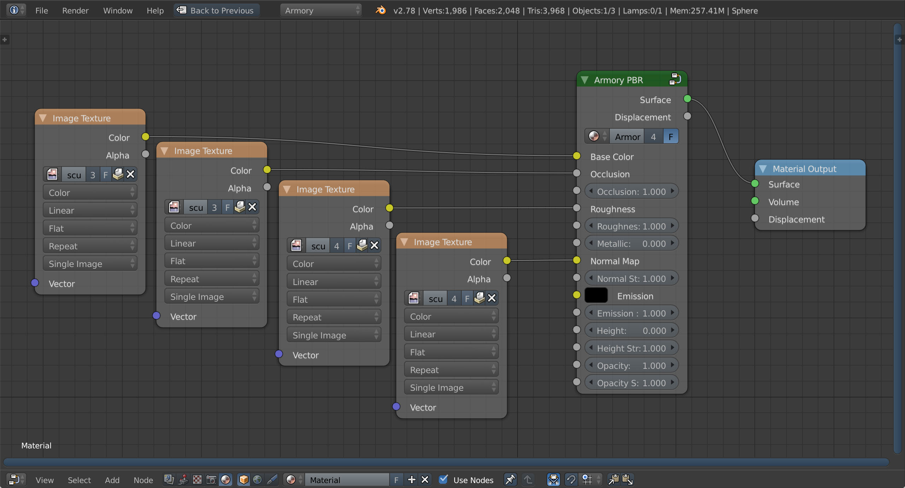

Scene 4 - Materials
This page describes how to work with Armory material system using the Cycles nodes.

Start by adding an Environment Texture node in world nodes. For this tutorial, we use Industrial Ruins from hdrlabs. In 3D viewport, check Properties panel (N) - Display - World Background to preview environment map.

Add a new UV Sphere. Set segments to 64 and rings to 32 in Tools panel (T). Set shading to smooth in Tools panel - Edit - Shading. Make sure UV map is present by unwrapping the sphere using Mesh - UV Unwrap... - Sphere Projection.
Create new material and switch to material editor. Select Add - Group - Armory PBR and connect Surface socket to the Material Output. Using Armory PBR node is recommended at all times. If we were to use Height maps for tessellated displacement, we would also connect Displacement sockets.
With Armory PBR node, it is easy to use standard PBR materials present in other real-time rendering engines. For this tutorial, we use Plastic Material from freepbr. Drop textures into material editor and connect them to the Base Color, Occlusion, Roughness and Normal Map sockets.

We will create two more spheres. For the second sphere, same material setup is used with only Base Color texture changed. For the third sphere, Base Color texture is removed and solid color of (0.8, 0.8, 0.8) with Metallic set to 1.0 is used. Plenty of distinct materials can be achieved just by playing with these values.

It is also possible to build materials without the Armory PBR node. Note this setup is not yet calibrated and therefore the results may look different/wrong compared to Cycles output.
Switch to second scene layer and create another 3 spheres. For the first one, we use a Diffuse BSDF node with Roughness of 0.3. For the second sphere, Glossy BSDF with Roughness of 0.0 is used. For the third sphere, both Diffuse BSDF and Glossy BSDF are used through Mix Shader node.

Switch to third scene layer and create another 3 spheres.
We can quickly assemble non-metallic material using standard nodes. Connect Color, Roughness and Normal textures to Diffuse BSDF sockets. Note that Normal Map node is used to connect Normal texture.

To create translucent surfaces, connect texture color or alpha to the Opacity socket of Armory PBR node. Alternatively, connect standard shader like Diffuse BSDF with Transparent BSDF into Mix Shader node. Make sure to enable Camera - Properties - Data - Armory Render Path - Translucency and hit Set (this will get automated in the future). To cut out surface by texture alpha, drop in opacity texture and connect Alpha to the Fac socket of Mix Shader.

It is recommended to bake everything down to textures and keep materials as simple as possible. However, if required and your performance budget allows, it is possible to use fully procedural Cycles materials. For this tutorial, we build a simple camouflage material.

Get the blend file at GitHub.